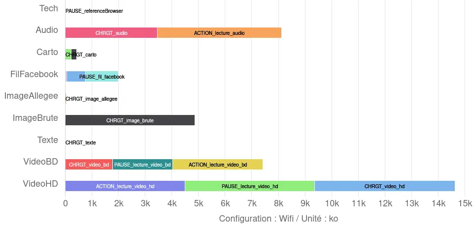
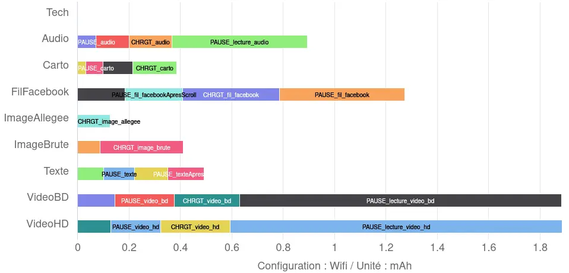
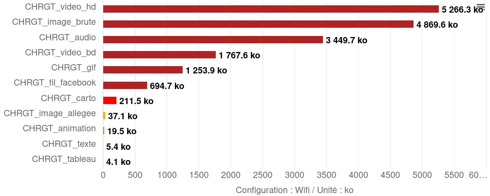
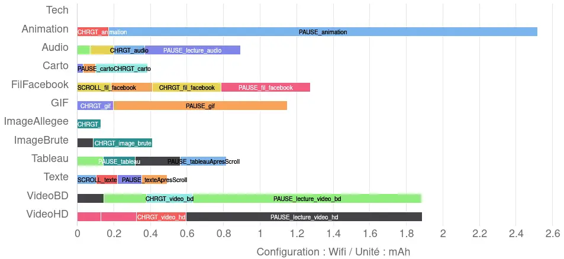
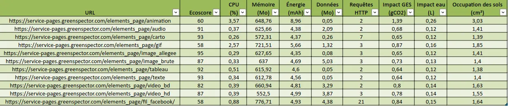

A few years ago, I had the chance to take part in the design of INRIA’s MOOC on the environmental and other impacts of digital technology. On that occasion, an activity was created by Benjamin Ninassi, with the aim of enabling participants to classify the elements of a web page according to their weight. The point here is to help participants build their own mental model of what constitutes a web page, and the respective impact of each element that makes it up. This is an essential step when considering web eco-design. That’s why I regularly use this activity for training purposes, as well as to raise awareness of the need for editorial restraint.
The primary objective of this article is to validate the classification proposed in this activity by measurement, but also to go further. This article was produced in collaboration with INRIA (thanks Benjamin!) and the MOOC activity will be modified accordingly in the near future.
Methodology
In order to measure the various elements that make up a web page, we started by creating as basic an HTML/CSS page as possible to serve as a reference for the measurements. This page has an all-black background. For each element to be measured, an HTML page is created from this reference page, to which only the element to be measured is added. The CSS is created in a separate file, containing at least the all-black background. This file is not minified (deletion of characters not required for code interpretation), as the input on such a short file is negligible.
Next, a simple path is automated in GDSL (Greenspector’s automation language) to simulate standard user behavior, based on a basic usage of the measured component. Then, once the measurements have been taken on the measurement bench, we generate a dashboard and environmental projection. These results are then used to analyze and rank the impact of the various elements measured.
As far as the media integrated into the page as an example for measurement purposes are concerned, we have used the elements used in the MOOC activity. The latter originally featured a Twitter feed, which has since been removed. With INRIA, we decided to replace it with a Facebook feed (INRIA’s own), both in the activity and in the sample measured here.
Furthermore, we decided to measure elements based on their nominal usage :
- Images, animation and animated image : loading, pause
- Audio and video files : loading, pause, playing
- Facebook embed, table, text : loading, pause, scrolling, pause
- Interactive map : loading, pause, zooming, pause.
The measurements were carried out on a Samsung Galaxy S9, using WIFI.
Various assumptions have been made for the environmental projection:
- 100% of users and servers located in France
- Distribution of user terminals (source: https://datareportal.com/reports/digital-2023-france) :
- 50% on smartphone
- 3% on tablet
- 47% on PC
The environmental projection methodology is described in this dedicated article.
Ranking page elements by weight
Warning: this article contains spoilers. It is based on the expected result for the activity « Compare the weight of elements on a web page ». If you haven’t done this activity yet, do it now.
In the MOOC activity, the proposed ranking is as follows (from the component with the highest weight to the one with the lowest weight):
- High Definition Video
- Low Definition Video
- Audio podcast
- Raw image
- OpenStreetMap
- A social network feed
- Autres traductions
- Text only
As a result of the measurements we have carried out, the data transferred when the corresponding pages are loaded gives the following results:
This is more or less the same classification as in the activity, with slight differences due to the content chosen for each content type.. It should be noted that the weight of these elements depends on several factors, in particular the social network selected and the content integrated here (message, message thread, etc.). The same applies to the other elements measured here, but the order of magnitude is still quite correct.
So here we can validate the ranking of element weights as proposed in the INRIA MOOC activity. We could stop here, but now let’s take it a step further. To do so, let’s take a look at what happens after the page has loaded, as well as at other metrics and indicators.
Other impacts of web page elements
So we’re sticking with the eight elements proposed in the activity.
The dashboard generated via Greenspector Studio lists several other metrics and indicators. The first score calculated concerns performance. However, on such lightweight pages, loading is too fast to be able to differentiate between elements in any meaningful way due to « noise », in particular TTFB (Time to First Byte), which can vary slightly from one iteration to the next.
Data transferred beyond initial upload
Let’s start by looking at the data transferred after the page has loaded: pause for 30 seconds, scroll to the bottom of the page, then pause again for 30 seconds.

We see here that the data transferred beyond loading is most of the time not negligible. In particular, in the case of video and audio playback (as one might expect) but also for the Facebook feed.
Energy consumption
Over all the stages measured, the energy consumed according to the elements is as follows:

We see that the order remains generally coherent with a few exceptions (we will come back to this later) but especially the Facebook feed which, although less impactful than the video, is more so than the other elements (notably the audio player).
Facebook feed
The page containing the Facebook feed is by far the most impactful in terms of energy. While it’s logical that scrolling and loading should have an impact (since these steps involve at the very least a modification of the display), it’s even more surprising when it comes to pauses. Indeed, when the user is inactive, the display is normally not modified. So it remains to be seen whether any « parasite » requests occur. In the Greenspector Studio web interface, we obtain the following representation:

On a « normal » pause stage, no data transfer takes place (apart from any requests related to Chrome browser telemetry). If, in addition, the display is not modified, we would expect to see a stable, low CPU load and no data transfer. This is not the case here. Apart from a strong CPU peak, correlated with data transfer, the CPU peaks seem to be more related to tracking.

When integrating content from an external service, it is common for requests to be sent at regular intervals to the source site to inform it of user behavior and interactions with the integrated content. We see it here in the case of Facebook but be aware that most social networks do this (in this regard, I recommend that you test the integration of Linkedin content…).
For more information, see our article on integrating third-party services on a web page: /ressources/blog/service-tiers-youtube/
Audio file integration
The text appears more impactful for energy than the interactive map or images. All these contents do not cause any change in the display once loaded and just viewed. On the other hand, on an AMOLED screen (like that of the S9 used here), the display of the text is more impactful than the images and the interactive map because the background is black but the text white. On this type of screen (and this is the reason for dark mode from a energy consumption point of view), a black pixel is much less expensive to display than a white pixel. We are therefore here in a special case but one which allows us to understand where the impact of a page in consultation only comes from.
For more information, see the article on the impact of color on energy consumption: /ressources/blog/faut-il-changer-son-fond-decran-pour-consommer-moins-de-batterie/
Intermediate conclusion
For MOOC activity elements, the measurement of transferred data confirms the expected ranking, with only a slight downside related to integrated social networking content.
However, if we look more closely at the energy consumed, we see that much of the impact of the Facebook feed occurs after loading, via regular requests to third-party services. This underlines the need to go beyond measuring requests, transferred data and the DOM, and also to measure what happens after the initial load, at the risk of missing out on third-party services (and elements whose loading is deferred, often for performance reasons). Also, it is a question (at the risk of insisting) of being as close as possible to user behavior.
Let’s take a look at how to add to the initial list of new items often found on the web.
Other elements integrated into a web page
In addition to the elements proposed in the MOOC activity, we looked at other items:
- Animated GIF
- CSS animation (simple text animated to arrive progressively on the screen from the right, in an infinite loop) based on a basic example from MDN: https://developer.mozilla.org/fr/docs/Web/CSS/CSS_Animations/Using_CSS_animations
- Native HTML table
The methodology for measuring and creating the sample pages is exactly the same as that described above.
Let’s take a look at the results.
Data transferred during initial loading
As a result of the measurements we have carried out, the data transferred when the corresponding pages are loaded gives the following results:

In addition to the above ranking of activity elements, we note that the selected GIF is heavier than most elements (which is of course linked to the content chosen for integration).
The table is less voluminous than the text because it contains fewer characters (fewer sentences of dummy content have been introduced into the table than into the page used to measure the impact of the text alone). We’ll see later that, in the case of the table, the overconsumption lies elsewhere. The animation here appears rather light (a few lines of HTML and CSS).
Note that the elements added here do not involve any additional data transfer beyond the initial loading stage.
Energy consumption
The results obtained here are as follows:

When limited to the elements of the MOOC activity, we noted a few differences with the ranking initially proposed. In particular, the Facebook feed stood out as the most impactful in terms of energy.
Here, we can see that the CSS animation is by far the most impactful in terms of energy. The Facebook feed comes right after the videos, followed by the animated GIF. This order is noteworthy: unlike the animated GIF, which continuously modifies the display, the Facebook feed appears rather static when the user is inactive. As mentioned above, its excessive energy consumption is due to what is not visible: requests to Facebook and video preloading.
The native HTML table is slightly more energy-intensive than plain text, even though it contains fewer characters. So, from the moment it’s displayed, the table makes slightly greater demands on the CPU (more on this later).
This was already mentioned in the article on sober sites:
/ressources/blog/un-site-sobre-est-il-necessairement-moche/
When an element on a page causes continuous or almost continuous changes to the display, the energy impact can be considerable. We’ll see in the last part of this article how this affects environmental impact.
Intermediate conclusion
The three added elements fit in unsurprisingly with the initial ranking based on data transferred. However, from an energy point of view, the CSS animation and the animated GIF have a considerable impact. This underlines the need for measurement to go beyond HTTP requests, transferred data and DOM. The usefulness of the latter metric for environmental projection remains debatable. The cases presented here are good illustrations of cases where the DOM is very light but the impacts are very significant.
This is detailed in another blog post: /en/resources/blog/dom-as-a-metric-for-monitoring-web-sobriety/
Finally, we’re going to use a different measurement methodology and collect data to get a more global view of the various elements.
Measuring pages with a « classic » benchmark
For this new series of measurements, we started with the same sample of pages, but used a classic benchmark. Each page is measured over a period of 70s, using the following steps:
- Page loading
- A pause with the page displayed in the foreground
- A pause step with the page displayed in the background
- Scrolling on the page
To find out more about the benchmark, visit this page: /ressources/blog/comment-est-calcule-lecoscore-dans-le-cas-dun-benchmark-web-ou-mobile/
The results are as follows:

As far as data transfer is concerned, we can see what we’ve already observed. However, it is more difficult to distinguish between CSS animation, text and HTML tables, as the quantities of data transferred are very small.
As for the CPU, we note some slight variations but above all the excess consumption for the CSS animation, the GIF and the Facebook feed are all the clearer. Following this top trio, we find the HTML table which, despite the small amount of data necessary for its loading, turns out to be impactful for the CPU.
For his part, Alexander Dawson has begun to investigate the impact of various standard HTML and CSS elements: https://websitesustainability.com/cache/files/research23.pdf [PDF 384 kb].
In terms of HTTP requests, the Facebook feed and the OpenStreetMap map are unsurprisingly at the top of the list. This involves the integration of dynamic elements provided by third-party services, which require more files to function. It’s worth noting that requests to and from Facebook are almost continuous, reaching more than 170 in all after a few minutes of user inactivity (as we saw above).
Regarding greenhouse gas emissions equivalents, animation and moving images have the most impact, followed by the Facebook feed (due to its high data and CPU consumption). For information, land use and water are also indicated (see the article on environmental projection: /en/resources/blog/environmental-footprint-methodology/). The rankings for these two other indicators remain broadly identical.
Intermediate conclusion
These new measurements, with a slightly different methodology, once again underline the need to take into account not only different metrics, but also the discrepancies observable during the evaluation of several environmental indicators.
Overall conclusion
Staying within the same perimeter (data transferred during initial loading), the measurements confirm the ranking of elements proposed by INRIA’s MOOC activity. The only point to be discussed is the integration of a social network element. In the sample selected here, the integration of the Facebook feed has a greater impact than the interactive map from OpenStreetMap (without even counting the other impacts identified beyond the initial loading or energy-related data).
If we go beyond this measurement perimeter (by also looking at other environmental metrics and indicators), the ranking may change, particularly because of the impact on energy consumption.
Lastly, the addition of new elements that can be integrated into a web page inevitably modifies the ranking, but above all refines the mental model mentioned in the introduction to this article. In particular, CSS animation and animated GIFs (as well as HTML tables to a lesser extent) highlight the impact on metrics that are not currently measured by most tools, even though they play a key role in environmental impact. For example, the CPU’s impact on the terminal’s battery discharge can lead to an acceleration in the terminal’s battery renewal, and therefore to major environmental impacts linked to this operation. This observation directly calls into question the widely adopted mental model for the environmental impacts of digital technology, which leads some people to « compensate » for their self-imposed diet of transferred data by setting up animations. By extension, this also raises questions about the impact of different formats and codecs for certain content (where the reduction in weight can be offset by a calculation overload that reduces or even cancels out the environmental gains).
While it’s normal to start with a simple mental model, this article also aims to highlight the need to refine it so that you have all the elements in hand to make informed choices. Hopefully, some of the results presented here will contribute to this.
In conclusion, two rankings are proposed here.
The first relies only on the data transferred during the initial loading, as initially planned in the activity (from least to most impacting):
- Table
- Text
- Animation
- Optimized image
- Interactive map
- Integration of social network content
- Animated GIF
- Audio file
- Low-definition video
- Raw image
- High-definition video
The second ranking is based directly on the projection of greenhouse gas emissions over all measurement stages (which means going back to the metrics to explain, but also being transparent about the environmental projection model):
- Text
- Table
- Light image
- Interactive map
- Audio file
- Raw image
- Low-definition video
- High-definition video
- Integration of social network content
- Animated gif
- Animation